To familiarize our selves with visualizing large data sets using a gui built by fltk and visual tools supplied by vtk and openGL
The program is using a data set from National Library of Medicine Visible Human project, more specifically the visible women project. More information about the data set can be found at http://www.crd.ge.com/esl/cgsp/projects/makevw
In order to compile the program you must have the following installed, vtk 4.0 , fltk 1.1.4 and glut-3.7.6. All are available on-line and free. Details on how to install them can be found at http:/www.soe.ucsc.edu/~pang/161/w04/prog1/data/VTKforPC.txt The program will run under both windows and unix machines. I developed the program under windows using ms Visual basic C++ 6.0.
Build under windowsFirst open MS Visual basic C++ 6.0. Then go to the file menu -> open work space, and you should get some thing like this.
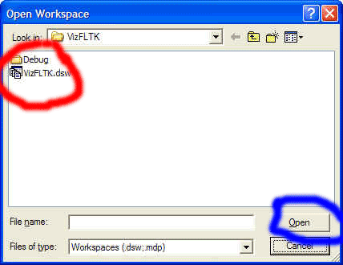
Locate the VizFLTK.dsw in red and click on open in blue. It should be located in the same directory as the program it self.
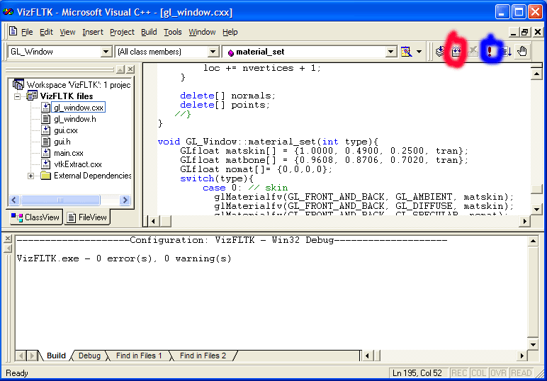
Once the program is loaded you can compile the program by clicking the red circled button. Then you can execute the program by clicking the blue circled button. The program should compile with no errors assuming you have the correct installation of the required files and applications as specified from above.
Build under unix
Log on to a unix machine using the X-Windows systems. With a command like so ssh -XC -l usrname ip, you should get something like so.
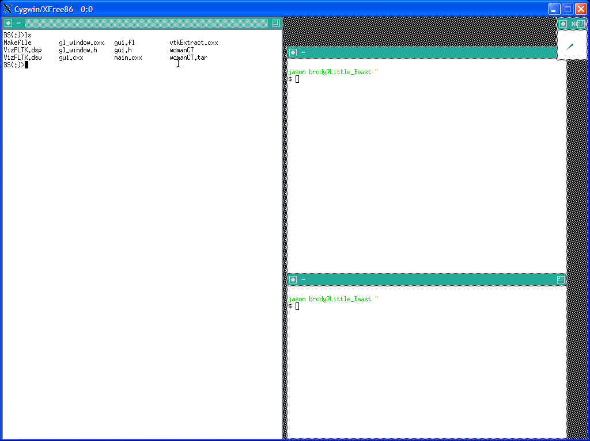
navigate to the directory where the program is located and type make. This compiles the program and should create a executable file called human. To run the program type human in the terminal.
The program works the same under both windows and unix so I will only show the windows version of the program running.
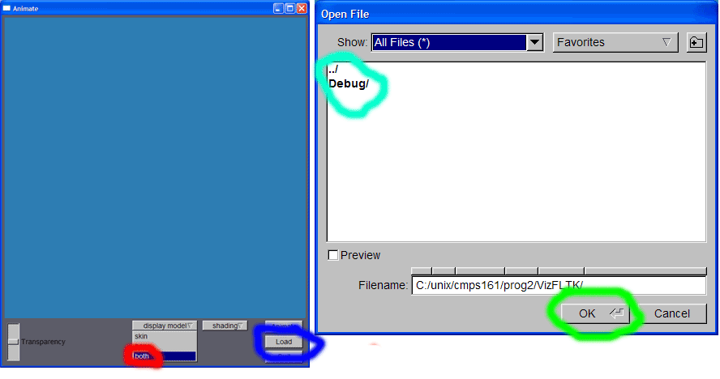
For optimization purposes you can load the skin or the bone alone. This is done by using the display model drop down. If you plan on looking at the skin and the bone I suggest you use the both labeled in red , as shown above. Once you have done this you can click on the load button labeled in blue. The gui will prompt you for the location of the data file(womenCT directory). Once you have told the program where the data is located go ahead and click the ok button in green. You will notice that the program seems to of stalled. If you are running in windows you can change windows to a console that looks like so.
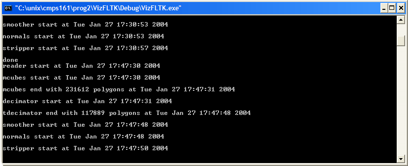
For both the skin and the bone the console will display a sequence of event and the time it took to start and complete the events. If you loaded the skin and the bone both the you should see the sequence go through twice. In other words the done should of come up twice.
You should now see something like so
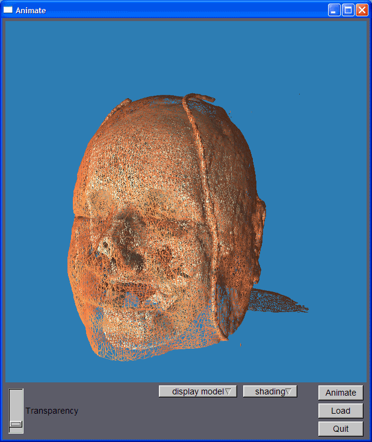
I include some features that help you visual the data in different way.
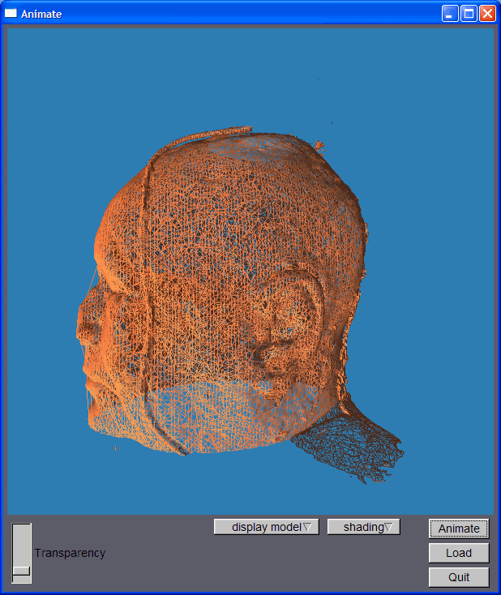 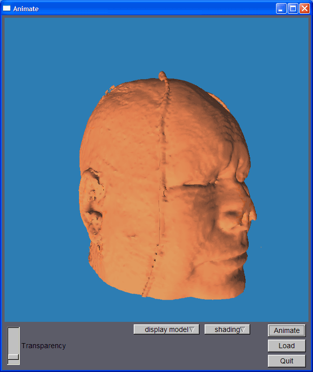
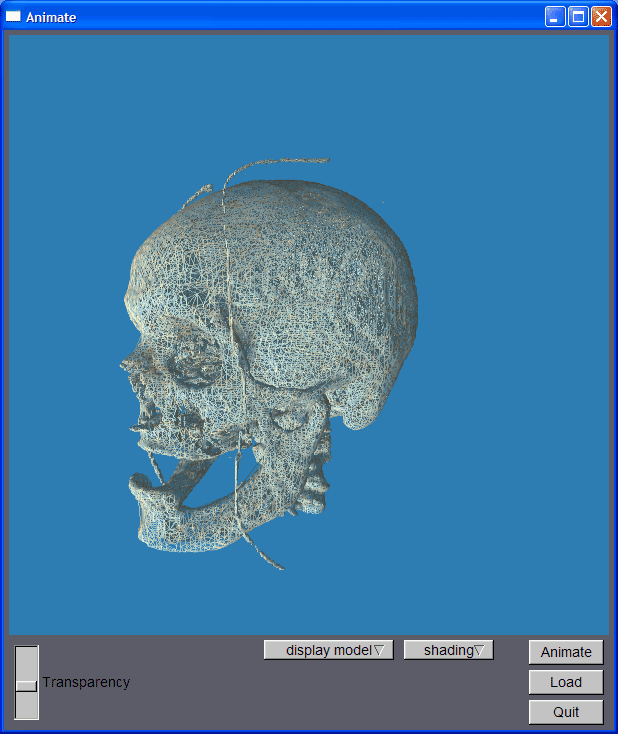 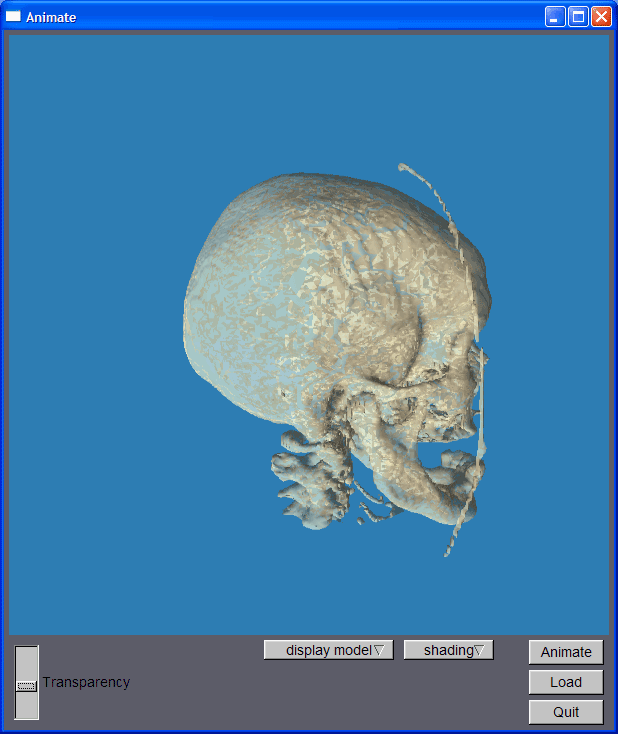
I had several problems when I first started the project. The first and most complicated was to understand the vtk source and to trace through the sample project and figure out exactly how vtk was being used. To solve this I used the ms visual basic c++ 6 debugger.
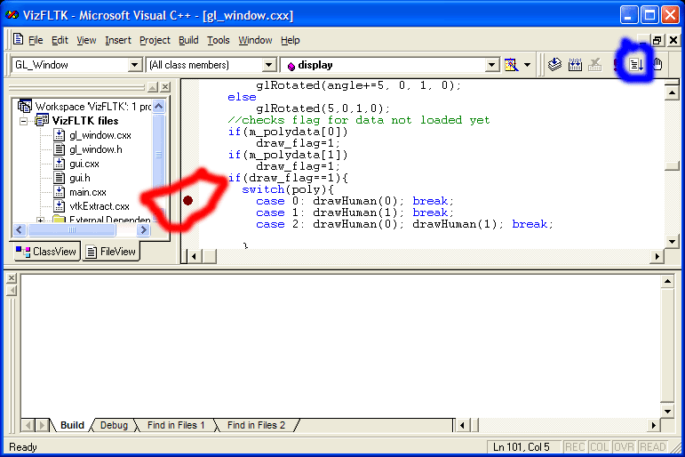
The way it works is you place the a break point by typing F9 and a red dot appears(the red circle) then build and run the program in debugging mode by pressing the button in the blue circle. This loads your program in a debugging mode runs it hits the location of the break point. This allows you to trace through the program very easily. Also a special menu pops up that allows you to execute the next line or function or ect ... It looks like so.
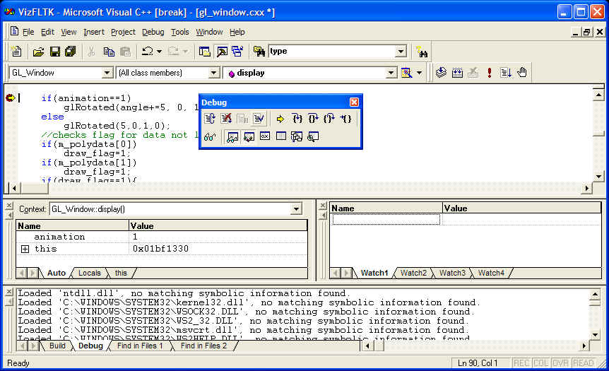
Once I figured out the debugger I was able to figure out the exact order of the program line by line.
The main changes came from replacing the #defines to variables set by the fluid gui. The DATA_PATH was replaced by a fl_dir_chooser() function that allowed the user to specify the directory where the data set was located. Because the data set was so large I had several optimization built into my GUI. You could load just the skin or the bone alone, or at the same time. You can view the data in smooth or wire frame and you can also make the data transparent.
I planned on making the skin transparent so that you could see the behind the skin. This brought up serious issues, in order to have the skin appear transparent with the bone behind the skin I would have to draw the polygons in the correct order. It turned out that if I drew the bone first then I drew the skin and the skin was transparent then it worked perfectly.